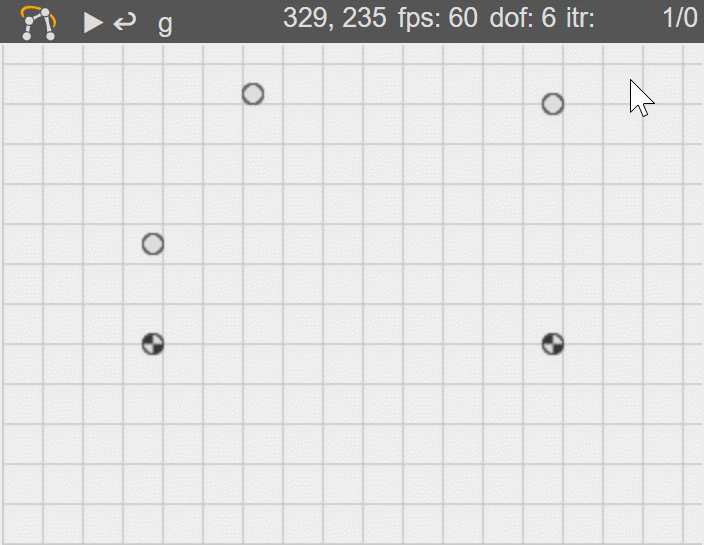
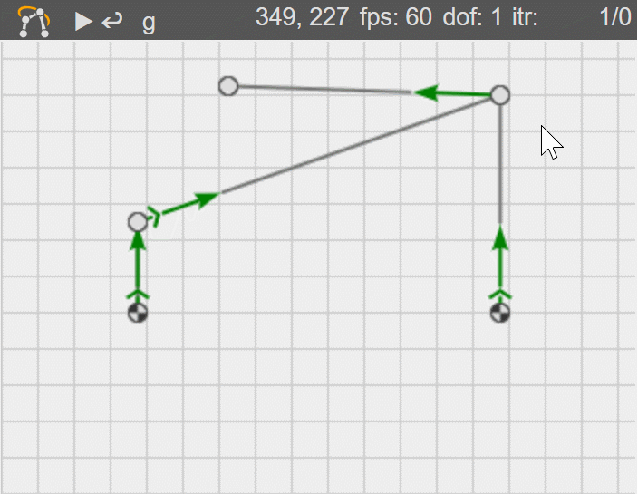

Necessary modules to be able to define a mechanism are:
- mec2.core
- mec2.model
- mec2.nodes
- mec2.constraints
All of them have to be imported for mec2 to be usable.
It is mandatory for the core module to be loaded first.
Please note that the mec2.js and mec2.min.js in the root of the project contain all modules, so no further imports are necessary.
Core #
The core module contains the central mec object on which all other modules build upon.
It provides the mechanism with:
- Parameters for numerical tolerances.
- Color modes (dark/light) and colors for the individual parts.
- Unit conversion functionality.
- An infrastructure for validation messages.
- Central configuration properties to show and hide certain elements.
- Centralized analyzing parameters for used metrics in calculations.
It is advised to use the properties given by the central mec object to minimize the overhead when changing the environment. Especially the analyzing capabilities minimize unit errors.
A mec model is respectively used as environment (env) for all models which are extended through it.
Model #
By importing mec.model, the model property is added to the mec object.
This property provides the extend function, which is designed
to assign mec's prototype and thereby all functionality onto a provided
model object.
It is recommended to issue model.extend as early as possible to apply all required capabilities to the mechanism.
An empty model which is extended by mec.model references the mec by its env property.
The mechanism model gets a lot of properties which are important for a mechanism:
- Operations on nodes, constraints, drives.
- Iteration functionality.
- Calculations for center of gravity.
- A timer.
- Ability to be drawn on a 2d context via g2.
Furthermore it provides the necessary infrastructure to call functions on
delegated modules;
e.g. by calling init on the model, the respective init functions on all
underlying elements like nodes, constraints etc. are called.
Therefore to import and extend the model using model.extend is a necessary step to create a fully functioning mechanism.
For nodes and constraints (and all other modules) to be delegated in the model it is of course necessary to import the respective modules.
Nodes #
nodes are two dimensional particles.
They are described by the following properties:
id- A unique id to identify single nodes. Ambiguities are not allowed.xandy- Cartesian coordinates in relation to the origin.base- A boolean parameter which sets the weight to positive infinity (ground). Default:false.mass- An optional parameter to set the mass of the node. Default: 1kg. Please note thatmasscan not be 0.
Velocity and acceleration can not be determined beforehand, but they are calculated in the simulation process and can be fetched at all times.
There are no interactions between nodes, except the ones defined by constraints, therefore nodes have two degrees of freedom if they are unconstrained.
To get an idea of the implementation of nodes the following code suffices to draw them on a dedicated context.
{
"nodes": [
{ "id": "A0", "x": 75, "y": 100, "base": true },
{ "id": "A", "x": 75, "y": 150 },
{ "id": "B", "x": 275, "y": 220 },
{ "id": "B0", "x": 275, "y": 100, "base": true },
{ "id": "C", "x": 125, "y": 225 }
]
}

Constraints #
constraints define the type of interactions of two nodes.
Provided a pair of nodes, constraints are defined by their id, using them as properties p1 and p2.
constraints have two properties to limit the movement of the respective nodes:
ori- The constraint allows changes in orientation, but not in length.len- The constraint allows changes in length, but not in orientation.
Both properties are given as objects, which have a at least a type.
Without extra modules, the type can be set as const or free, limiting the model in the respective range of motion. By the usage of other modules, e.g. mec2.drive the type can be set as drive, to force a specific motion.
| length | const | free | const | free |
| orientation | const | const | free | free |
| DOF* | 0 | 1 | 1 | 2 |
*degree of freedom #
Constraints are made available by importing the mec2.constraints module.
{
"nodes": [
{ "id": "A0", "x": 75, "y": 100, "base": true },
{ "id": "A", "x": 75, "y": 150 },
{ "id": "B", "x": 275, "y": 220 },
{ "id": "B0", "x": 275, "y": 100, "base": true },
{ "id": "C", "x": 125, "y": 225 }
],
"constraints": [
{ "id": "a", "p1": "A0", "p2": "A", "len": { "type":"const" } },
{ "id": "b", "p1": "A", "p2": "B", "len": { "type":"const" } },
{ "id": "c", "p1": "B0", "p2": "B", "len": { "type":"const" } },
{ "id": "d", "p1": "B", "p2": "C","len": { "type":"const" },
"ori": { "ref": "b", "type": "const" } }
]
}
